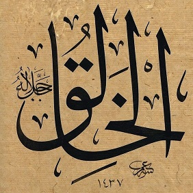
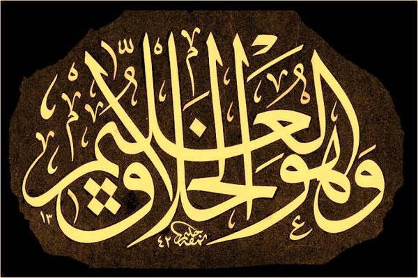

Haşr Suresinin son âyetinde yaratmakla ilgili üç isim var:
el-Hâlık, el-Bâri, el-Musavvir

Bilmek ve yaratmak çoğu zaman bir arada. Mesela Yasin Suresindeki şu haber: 
Mesela Mülk Suresindeki, cevabı mâlum olan soru:
67:14 elâ ya'lemu men ḣalak
Yaratan bilmez mi?